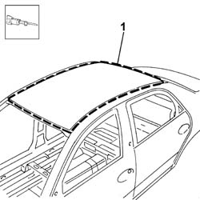
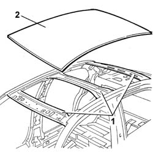
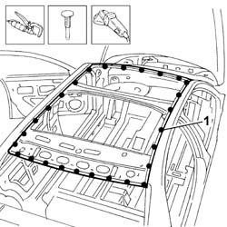
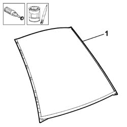
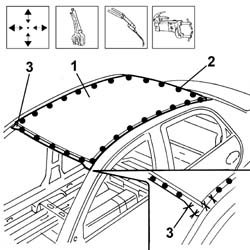

7210E28 ROOF
- Path
- Procedures > 72 panels and frames > 7210 REMOVING REFITTING > 7210E EXTERNAL PARTS > 7210E28 ROOF
- Kind
- repair procedure (removal / refitting; the operation number is the code)
- Applies to
- all engines; all production periods
- Interactive page
- https://sloeber94.github.io/elrnDB-lThss/en/#/501159
Applies to: all engines; all production periods
Applies to: all engines; all production periods
 Removing
Removing
 Refitting
Refitting- Check that the connected components are not distorted by checking the bodyshell alignment figures using suitable equipment (gauges, templates, jigs).
- Carry out any bodyshell straightening operations before cutting the component.
1. Cut along the lines shown in the diagram using a power saw.

Applies to: all engines; all production periods
1. Heat the area of the ribs to allow the sealant to be detached.
2. Remove the roof.

Applies to: all engines; all production periods
Refitting
Removing1. Remove the spot welds along the perimeter of the roof and remove the offcuts using a hammer and chisel.
- Remove the edges of the panel.
- Remove the spot weld residues using a disc grinder.

Applies to: all engines; all production periods
1. Remove the anti-corrosion treatment from the entire perimeter of the replacement part using a rotary brush and apply electro-galvanizing paint.

Applies to: all engines; all production periods
1. Position the roof and secure it using self-locking clamps.
- Check that the roof is correctly positioned.
2. Spot weld the entire perimeter of the roof.
3. Weld near the areas where the roof is joined to the front and rear pillars.

Applies to: all engines; all production periods
- Check that the welded component is correct positioned.
- Level the spot welds using a disc grinder.
- Use a rotary brush and clean the inner parts.
- Apply electro-galvanizing paint to the ground parts.